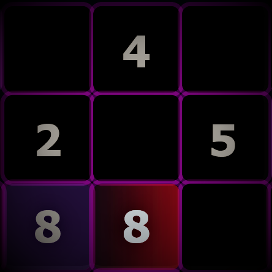
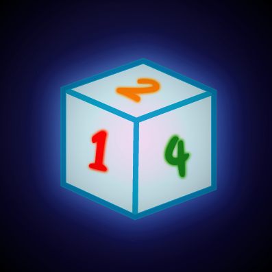
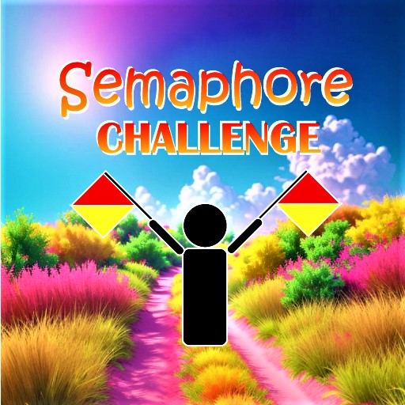
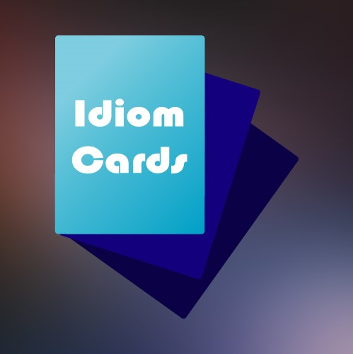
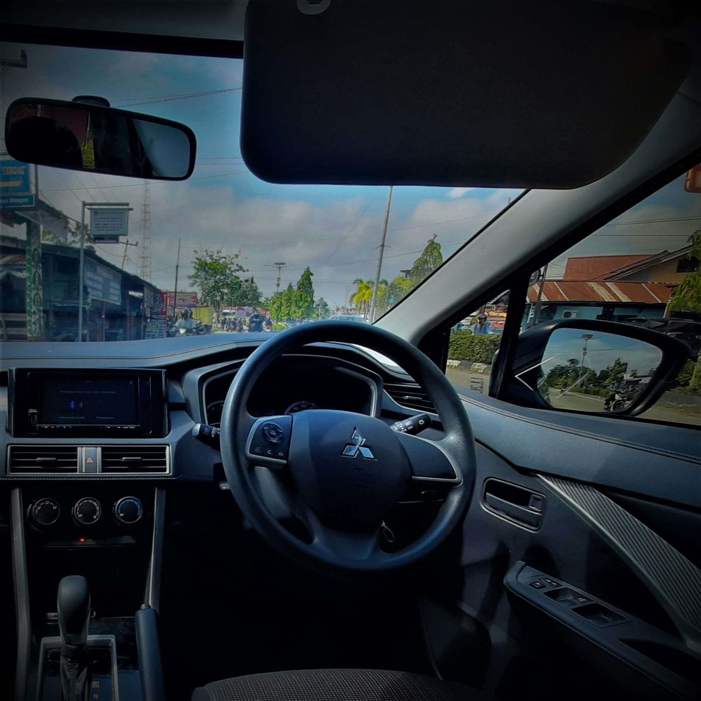

My Projects





About Alexandearx
I live by a duality: when I'm not solving puzzles, I'm building them. This focus is honed both on-screen and off.
My lifelong passion for Sudoku organically formed the analytical foundation of my development skills, demanding precision and strategy.
In parallel, my pursuit of Martial Arts instills the discipline, quick thinking, and focus required to craft clean, interactive, and robust Front-End interfaces (primarily HTML/CSS/JS).